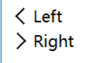
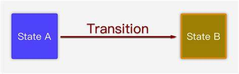
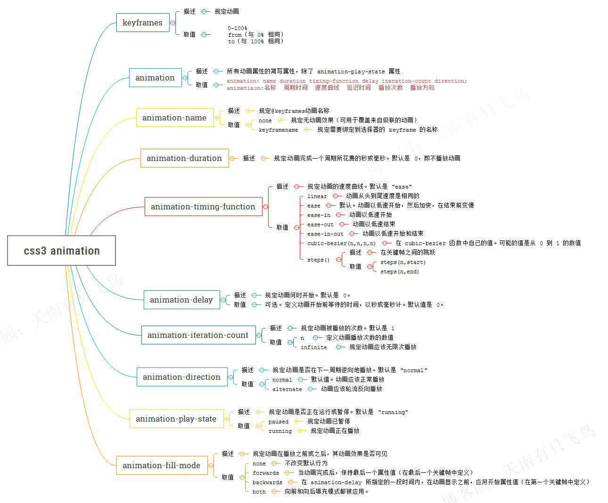
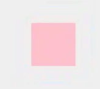
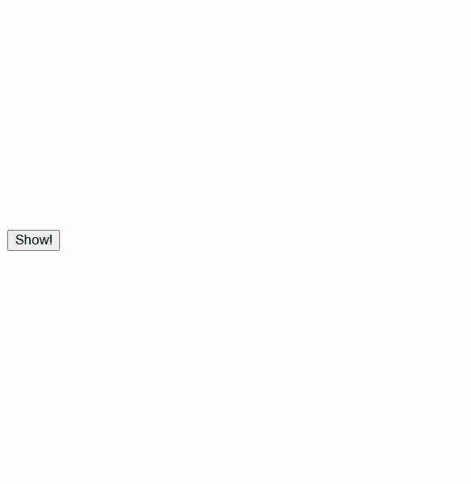

CSS3动画入门
1 CSS 3 动画简介
我们平时看到的动画是由一张一张静态的画面拼接而成的，我们通常用帧数来体现出动画效果的好与坏。 每一帧都是静止的图象，快速连续地显示帧便形成了运动的假象。 高的帧率可以得到更流畅、更逼真的动画。1
css中实现动画有两种方式：过渡动画 transitions|自定义动画animation;两者均可以通过元素的旋转(rotate)，缩放(scale)，倾斜（skew)或平移translate（*也可使用较复杂的矩阵API：(transform)）、颜色(color|background)、透明度(opcaticy)完成帧动画效果。下列示例是一个旋转的实例，可查阅MDN文档学习其他位置变换属性、颜色背景等。
<html>
<head>
<style>
#arrow-right{
display: inline-block; /*修改未行内元素、可修改高&宽*/
margin:4px;
width: 10px;
height: 10px;
border-right:2px solid black;
border-bottom:2px solid black;
transform-origin: 0% 100%; /*中心*/
transform: rotate(-45deg); /*然后逆时针旋转45°*/
}
#arrow-left{
display: inline-block;
margin:4px;
width: 10px;
height: 10px;
border-top:2px solid black;
border-left:2px solid black;
transform: rotate(-45deg); /*原地逆时针旋转45°*/
}
.row{
margin:4px;
display: flex; /*flex 布局*/
justify-content:start; /*元素从左侧排列,常用的还有center|space-around|space-between..*/
align-items: center;/*子元素按垂直居中对齐*/
}
</style>
</head>
<body>
<div class="row">
<div id='arrow-left'></div> <span> Left </span>
</div>
<div class="row">
<div id='arrow-right'></div> <span>Right</span>
</div>
</body>
</html>
完成后生成左、右箭头，当然这个是没有动画效果的，因为它是对元素立即生效的。

1.1 transitions
transition属性的作用是补充中间帧（你只需要告诉它开始怎么样，结束怎么样，过程动画它会自动补齐）,需要配合transform、translate等属性一起完成动画效果。

transition: property duration timing-function delay;
transition-property 指定CSS属性的name，transition效果：none、transform、all、等等 transition-duration transition效果需要指定多少秒或毫秒才能完成 transition-timing-function 指定transition效果的转速曲线,常用 lineartransition-delay 定义transition效果开始的时候
类似上面那个箭头实例，我们加上鼠标悬停的动画效果，代码如下：
<html>
<head>
<style>
.close {
cursor: pointer; /*使鼠标指针显示为手型*/
display: block;
width: 30px;
height: 30px;
border-right: 2px solid black;
border-top: 2px solid black;
font-size: 20px;
line-height: 32px;
background: #fff;
color: #8b8ab3;
text-align: center;
transform: rotate(45deg); /*原地逆时针旋转45°*/
}
.close:hover {
transform: rotate(135deg); /*原地逆时针旋转135°*/
transition: transform 1s linear; /*图标在1秒内匀速旋转135。*/
}
</style>
</head>
<body>
<div class="close"></div>
</body>
</html>
1.2 animation2
CSS animations动画包括两个部分：描述动画的样式规则和用于指定动画开始、结束以及中间点样式的关键帧（@keyframes）。

<style>
.box {
width: 50px;
height: 50px;
background-color: pink; /*初始未粉色*/
animation-name: test; /*动画名称*/
animation-duration: 1s; /*1s动画循环*/
animation-iteration-count: infinite; /*无限播放*/
}
@keyframes test {
50% { /*0.5s的关键帧，注意可以自行增加其他百分比的关键字*/
width: 100px; /*变大2倍*/
height: 100px;
border-radius: 50%; /*边框改为圆形*/
background-color: skyblue;/*颜色变为*/
}
}
</style>
<body>
<div class="box"></div>
</body>
生成效果如下：

2 vue 配合animate.css 3的高级动画
一般在开发时可使用animate.css完成动画效果；配合vue的过渡·transition·的示例如下：
<html lang="en">
<head>
<meta charset="UTF-8" />
<meta http-equiv="X-UA-Compatible" content="IE=edge" />
<meta name="viewport" content="width=device-width, initial-scale=1.0" />
<script src="https://unpkg.com/vue@2"></script>
<link
rel="stylesheet"
href="https://cdnjs.cloudflare.com/ajax/libs/animate.css/4.1.1/animate.min.css"
/>
<style>
.box {
width: 450px;
height: 220px;
background-size: cover;
background-repeat: no-repeat;
background-image: url(./1.webp);
margin: 2px 0;
border-radius: 4px;
box-shadow: 0px 0px 15px lightgreen;
}
/* .fade-enter-active,.fade-leave-active {
transition: all 5s ease-out;
}
.fade-enter,.fade-leave-to{
opacity: 0;
transform: scale(0.5) rotate(-360deg);
}
.fade-enter-to,.fade-leave{
opacity: 1;
} */
</style>
</head>
<body>
<div id="demo">
<transition appear
appear-active-class="animate__animated animate__bounceInDown"
><div class="box"></div>
</transition>
<button @click="show=!show">{{show?'hide':'Show!'}}</button>
<!-- <transition name="fade"></transition> -->
<transition
enter-active-class="animate__animated animate__flipInY"
leave-active-class="animate__animated animate__flipOutY"
>
<div class="box" v-if="show"></div>
</transition>
</div>
<script>
const vm = new Vue({
el: "#demo",
data: { show: false },
});
</script>
</body>
</html>
